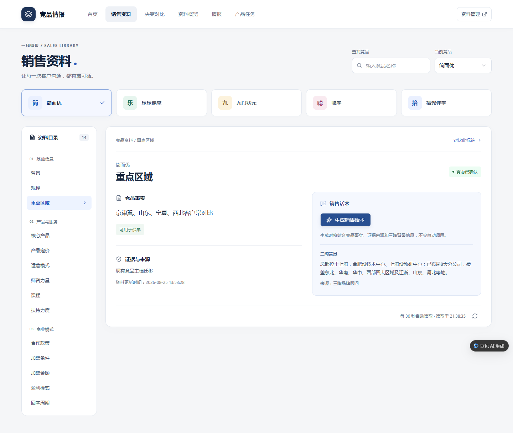
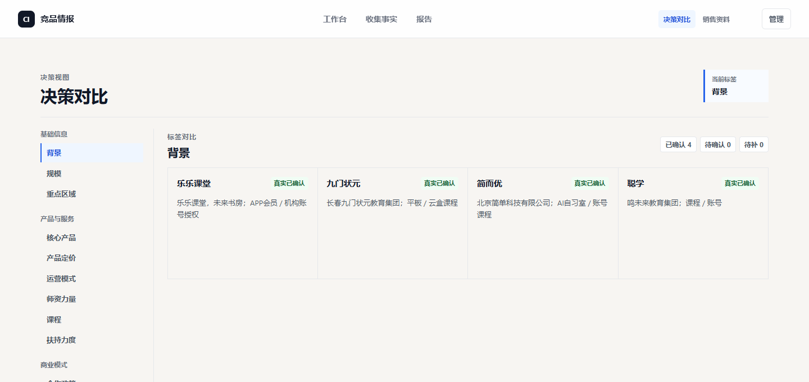
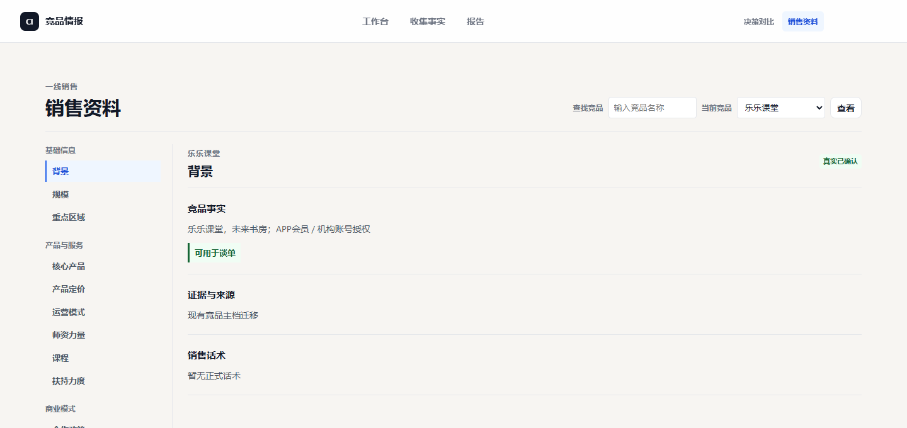

竞品情报与销售支持平台
SELECTED ARTIFACTS / 原始材料
竞品平台：两个版本的真实历史页面
保留原程序的比较与查询页面，区分资料确认、来源缺口和正式话术发布。
 缩略预览 · 点击放大 ↗
缩略预览 · 点击放大 ↗决策比较与资料缺口
原程序决策对比页展示14标签下我方与5家竞品的横向比较、资料缺口和来源说明。

缩略预览 · 点击放大 ↗销售查询与库内确认状态
同日销售查询页展示重点区域资料、库内“已确认”标记、迁移来源与更新时间。
初版4家竞品×14标签＝56个资料项；9月10日快照为5家、70项。35条话术草稿、0条正式发布是该日记录；当前已对接使用流程依据本人确认。
再看 2 份补充材料

缩略预览 · 点击放大 ↗旧版：同资料的决策视角
旧版决策页展示“乐乐课堂／背景”在横向比较中的呈现，可与同期销售页对照。

缩略预览 · 点击放大 ↗旧版：同资料的销售视角
同期旧版销售页呈现同一条背景资料与来源，同时保留“可用于谈单”和“暂无正式话术”的提示。
查看原文节选与材料说明
两个历史版本
2026-08-31的两图可对照同一资料在决策与销售视角的展示；2026-09-10的两图展示后续比较、查询、资料缺口与来源字段。
确认与发布分开
随包核查说明记载9月10日话术为35条草稿、0条正式发布；这是说明记录，不将库内“已确认”改写为正式发布。该组图片不单独证明当前线上使用、15工作日交付或获奖。
统一比较口径，分开资料与话术
管理需要横向比较，销售需要快速查证，维护需要持续补资料。因此用同一标签口径支撑不同入口，并明确确认状态与发布状态的区别；历史页面和有日期的快照共同说明已实现的范围。
业务问题
多部门重复收集竞品资料，比较口径不一，销售查证与资料维护又有不同任务。
我的工作
我主导产品设计，独立完成开发部署并对接使用流程；用14个标签组织比较、事实查阅与维护入口，OD负责组织推广。
交付记录
15个工作日完成初版搭建，独立推进开发部署与使用流程对接。页面展示两个历史版本的比较、查询、来源和资料缺口。
带来价值
比较、事实查阅与维护各有入口，资料依据、确认状态与缺口一起呈现；资料确认和正式话术发布分别记录。
体验规则样板 · 预设状态与示例数据
体验三类用户看到的信息
一条信息，先核实，再使用。
横向比较时，确认状态与资料缺口一起呈现。
| 比较标签 | 竞品 A | 竞品 B | 使用边界 |
|---|---|---|---|
| 服务形态 | 线下服务 | 线上服务 | 已确认 |
| 报价口径 | 资料已归档 | 缺少统一口径 | 待确认 |
| 续费政策 | 未收集 | 未收集 | 暂无资料 |
缺失值保留为“暂无资料”，避免把未知当作“没有”。
个人职责与数据口径
我主导并独立完成开发部署，已对接使用流程；职责与状态由本人确认，OD负责组织推广。4家56档案位为早期版本；9月10日5家70项（含空缺）、35草稿0正式话术为历史快照。奖项见本人简历，正式凭据未附；正式话术发布、实际使用量和转化成效尚无对应记录。
展开实施细节与具体交付件
按本人履历记录，8月24日至9月11日承担需求定义、信息架构与平台搭建，15个工作日形成平台；借助Codex、WorkBuddy进行AI辅助开发，以Flask与SQLite构建本地应用。本人本轮确认主导开发、独立完成平台开发部署并对接使用流程。
用3组14个固定标签统一资料口径，将管理决策、销售查阅与资料维护拆成不同路径。早期4家竞品对应56个资料项；9月10日历史库为5家、70项，其中43已确认、5待确认、22空缺；同日保留35条话术草稿、0正式话术发布。资料确认不等于话术发布。
推进数据迁移、自动化测试、浏览器视口检查及局域网和公开网络交付，跟进按钮响应和信息状态等试用反馈。原程序历史页能展示比较、事实查询、迁移来源和状态；销售资料入口中的事实查阅与正式话术分开，不能由规则设计推定发布全链路已发生。
主笔实践报告，制作HTML叙事材料《一条竞品信息的旅程》，展示资料收集、确认到业务应用的产品逻辑，并作为主创与团队协作参赛。本人简历记载飞书AI先锋跨企业竞技大赛二等奖，正式获奖凭据未附，不将其改写为全国赛获奖。
展示版方案摘要 · 角色、信息状态与发布规则
使用者与任务
- 管理者：统一标签，比较差异与缺口。
- 销售：查阅已发布信息与话术。
- 维护者：补充资料，记录依据，维护内容。
演示中的状态设计
本演示将核实与发布分成两个状态，说明“已确认资料”与“可供销售使用的内容”不同。真实系统的发布权限与流程，以原系统为准。
交付与后续验证
交付可运行平台、测试与试用记录、实践报告。下一步记录固定任务的查询耗时、使用频率与资料更新覆盖率，再评估业务效果。
依据项目经历整理，非原始 PRD 节选。